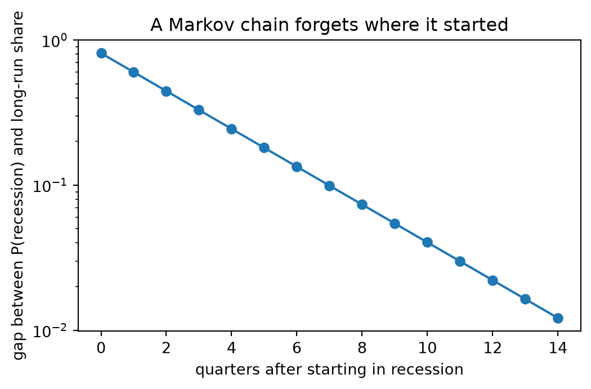

import numpy as np
import pandas as pd
import matplotlib.pyplot as pltWeek 7: Linear algebra and Markov chains
Open in Colab · View on GitHub
Many economic models are, at heart, a system of linear equations: markets that affect each other, industries that buy from each other, and states that an economy moves between. Last week’s solvers handle one equation at a time; this week you solve many at once, and you study a model that moves through time by chance, a Markov chain.
After this week you can:
- build vectors and matrices with NumPy and multiply them with
@ - solve \(Mx = b\) with
np.linalg.solve(and see why you almost never invert a matrix) - solve a linked-markets model and an input-output (Leontief) model
- read a condition number as a warning about fragile answers
- estimate a Markov chain from data, and find its long-run distribution and expected durations
1. Vectors, matrices, and @
A matrix is a rectangular array of numbers, a vector a single column. The operator @ is matrix multiplication; * multiplies element by element, which is not the same thing.
M = np.array([[2.0, 1.0],
[1.0, 3.0]])
x = np.array([1.0, 2.0])
print("M @ x =", M @ x)
print("M * x =", M * x) # elementwise: each column scaled, not a matrix product
print("shape of M:", M.shape, " transpose:\n", M.T)M @ x = [4. 7.]
M * x = [[2. 2.]
[1. 6.]]
shape of M: (2, 2) transpose:
[[2. 1.]
[1. 3.]]2. Solving \(Mx = b\)
Three related markets have prices \(p_1, p_2, p_3\). In market \(i\) demand is \(a_i - \sum_j b_{ij}\,p_j\) (own price matters most; the others are substitutes, so a higher price elsewhere raises demand here), and supply is \(c_i + d_i\,p_i\). Setting demand equal to supply in all three markets gives
\[(B + D)\,p = a - c,\]
a linear system. np.linalg.solve finds the prices in one step.
B = np.array([[ 4.0, -1.0, -0.5],
[-1.0, 3.5, -1.0],
[-0.5, -1.0, 3.0]])
D = np.diag([2.0, 3.0, 2.5]) # supply slopes
a = np.array([100.0, 80.0, 60.0])
c = np.array([10.0, 5.0, 0.0])
p = np.linalg.solve(B + D, a - c)
print("equilibrium prices:", p.round(3))
print("largest residual:", np.abs((B + D) @ p - (a - c)).max())equilibrium prices: [19.127 16.9 15.721]
largest residual: 1.4210854715202004e-14What if the demand intercept in market 2 shifts? The inverse matrix \((B+D)^{-1}\) holds every cross-effect at once: column \(j\) says how all prices respond to a one-unit shift in market \(j\)’s intercept. Computing it is fine for a small matrix we want to read; to solve a single system, solve is faster and more accurate.
M = np.linalg.inv(B + D)
print(M.round(3))
shock = np.array([0.0, 10.0, 0.0])
print("price changes after +10 on market 2's intercept:", (M @ shock).round(3))
print("check by re-solving:", (np.linalg.solve(B + D, a + shock - c) - p).round(3))[[0.173 0.03 0.021]
[0.03 0.163 0.032]
[0.021 0.032 0.19 ]]
price changes after +10 on market 2's intercept: [0.299 1.634 0.324]
check by re-solving: [0.299 1.634 0.324]A shock to market 2 raises price 2 the most (by about 1.6) and spills over to markets 1 and 3 (by 0.3 each), exactly as the off-diagonal entries of the inverse say.
3. Input-output: the Leontief model
Three industries each use the others’ output. Let \(A_{ij}\) be the amount of industry \(i\)’s output needed to make one unit of industry \(j\)’s output, and \(d\) the final demand. Total output \(x\) must cover what industries use plus final demand:
\[x = Ax + d \quad\Longrightarrow\quad (I - A)\,x = d.\]
The matrix \(L = (I-A)^{-1}\) is the Leontief inverse: column \(j\) gives the total output (direct and indirect) needed across all industries for one unit of final demand for \(j\).
A_io = np.array([[0.20, 0.10, 0.05],
[0.30, 0.25, 0.15],
[0.10, 0.20, 0.10]])
d = np.array([50.0, 100.0, 150.0])
x = np.linalg.solve(np.eye(3) - A_io, d)
print("total output:", x.round(2))
L = np.linalg.inv(np.eye(3) - A_io)
print("column sums of Leontief inverse (output multipliers):", L.sum(axis=0).round(3))total output: [104.26 220.49 227.25]
column sums of Leontief inverse (output multipliers): [2.215 2.049 1.576]Another way to get the same answer. Production happens in rounds: first make \(d\), then the inputs for \(d\), then the inputs for those, and so on, so \(x = d + Ad + A^2 d + \cdots\). Iterating \(x \leftarrow Ax + d\) converges to the same \(x\).
xi = np.zeros(3)
for n in range(1, 500):
xn = A_io @ xi + d
if np.abs(xn - xi).max() < 1e-10:
break
xi = xn
print(f"converged after {n} rounds:", xn.round(2))
print("same as solve:", np.allclose(xn, x))converged after 40 rounds: [104.26 220.49 227.25]
same as solve: True4. When a linear system is fragile
Some systems are almost unsolvable: two equations nearly the same line. The condition number measures this; a large one means tiny changes in \(b\) cause large changes in the answer.
M2 = np.array([[1.0, 1.0],
[1.0, 1.0001]])
print("condition number:", round(np.linalg.cond(M2)))
print("solution for b = (2, 2.0001):", np.linalg.solve(M2, [2.0, 2.0001]))
print("solution for b = (2, 2.0002):", np.linalg.solve(M2, [2.0, 2.0002]))
print("condition number of the market system:", round(np.linalg.cond(B + D), 2))condition number: 40002
solution for b = (2, 2.0001): [1. 1.]
solution for b = (2, 2.0002): [0. 2.]
condition number of the market system: 1.73Changing one entry of \(b\) by 0.0001 moved the solution from \((1, 1)\) to \((0, 2)\): with a condition number near 40,000, you lose about four or five digits of accuracy. The market system, at about 1.7, is perfectly safe. If you estimate a model and the condition number of your matrix is huge (collinear regressors, for instance), distrust the coefficients.
5. Markov chains
A Markov chain describes something that moves between a few states, where the chance of the next state depends only on the current state. Collect the probabilities in a matrix \(P\) with \(P_{ij} = \Pr(\text{next} = j \mid \text{now} = i)\); each row sums to 1. If \(\pi_t\) is the row vector of probabilities over states at time \(t\), then \(\pi_{t+1} = \pi_t P\), so \(\pi_{t+n} = \pi_t P^n\).
Our states: expansion (0) or recession (1), using the NBER’s dated recessions for the quarterly US data from Week 5.
from pathlib import Path
DATA = "../data" if Path("../data").exists() else "https://raw.githubusercontent.com/WSU-EconS431/site/main/data"
us = pd.read_csv(f"{DATA}/us_macro_1959_2009.csv")
us["q"] = pd.PeriodIndex.from_fields(year=us["year"], quarter=us["quarter"], freq="Q")
us = us.set_index("q")
rec = pd.read_csv(f"{DATA}/nber_recessions.csv")
in_rec = pd.Series(0, index=us.index)
for r in rec.itertuples():
in_rec.loc[pd.Period(r.peak_quarter):pd.Period(r.trough_quarter)] = 1
s = in_rec.to_numpy()
print(f"{len(s)} quarters, {s.sum()} of them in recession ({s.mean():.1%})")203 quarters, 38 of them in recession (18.7%)Estimating \(P\). Count the transitions from each state to each state, then divide each row by its total.
counts = np.zeros((2, 2))
for now, nxt in zip(s[:-1], s[1:]):
counts[now, nxt] += 1
P = counts / counts.sum(axis=1, keepdims=True)
print("counts:\n", counts)
print("P =\n", P.round(3))counts:
[[156. 8.]
[ 8. 30.]]
P =
[[0.951 0.049]
[0.211 0.789]]Expansions are persistent (95% stay expansions), and recessions are too, though much less (79% stay recessions). Two numbers follow directly. The chance of leaving a state each quarter is \(1 - P_{ii}\), so the expected duration is \(1/(1-P_{ii})\):
print(f"expected expansion length: {1 / (1 - P[0, 0]):.1f} quarters")
print(f"expected recession length: {1 / (1 - P[1, 1]):.1f} quarters")expected expansion length: 20.5 quarters
expected recession length: 4.8 quartersWhere does the chain end up? Start anywhere and apply \(P\) many times: the distribution settles to a stationary distribution \(\pi^*\) with \(\pi^* = \pi^* P\). That is, \(\pi^*\) is a left eigenvector of \(P\) with eigenvalue 1. Two ways to find it:
# (1) eigenvector of P transposed
w, v = np.linalg.eig(P.T)
pi_star = np.real(v[:, np.argmax(np.real(w))])
pi_star = pi_star / pi_star.sum()
print("eigenvector method:", pi_star.round(4))
# (2) just iterate
dist = np.array([0.0, 1.0]) # start in recession
for n in range(200):
dist = dist @ P
print("after 200 steps from recession:", dist.round(4))
print("share of quarters actually in recession:", s.mean().round(4))eigenvector method: [0.8119 0.1881]
after 200 steps from recession: [0.8119 0.1881]
share of quarters actually in recession: 0.1872The chain’s long-run recession share (about 19%) matches the sample share, as it should: the transition counts come from the same data. How fast it forgets its starting point is governed by the second eigenvalue of \(P\) (here about 0.74): each quarter, the gap to \(\pi^*\) shrinks by about that factor.
dist = np.array([0.0, 1.0])
gaps = []
for n in range(15):
gaps.append(abs(dist[1] - pi_star[1]))
dist = dist @ P
fig, ax = plt.subplots(figsize=(6, 3.5))
ax.semilogy(gaps, "o-")
ax.set_xlabel("quarters after starting in recession")
ax.set_ylabel("gap between P(recession) and long-run share")
ax.set_title("A Markov chain forgets where it started")
plt.show()
print("second eigenvalue:", np.sort(np.real(w))[0].round(3))
second eigenvalue: 0.7416. A second chain: high or low unemployment
Define the state as high unemployment (6% or more) or low, using the same quarterly data. High unemployment is very persistent here, which changes the long-run answer.
st = (us["unemp"].to_numpy() >= 6.0).astype(int)
C = np.zeros((2, 2))
for now, nxt in zip(st[:-1], st[1:]):
C[now, nxt] += 1
P2 = C / C.sum(axis=1, keepdims=True)
print("P2 =\n", P2.round(3))
# stationary distribution by solving (P' - I) pi = 0 with the extra equation sum(pi) = 1
M3 = np.vstack([P2.T - np.eye(2), np.ones(2)])
pi2 = np.linalg.lstsq(M3, np.array([0.0, 0.0, 1.0]), rcond=None)[0]
print("stationary distribution:", pi2.round(3), " share of sample quarters in high-unemployment:", st.mean().round(3))
print("expected high-unemployment spell:", round(1 / (1 - P2[1, 1]), 1), "quarters")P2 =
[[0.944 0.056]
[0.079 0.921]]
stationary distribution: [0.587 0.413] share of sample quarters in high-unemployment: 0.379
expected high-unemployment spell: 12.7 quartersThe stationary share (about 41%) differs from the sample share (about 38%): the chain is estimated from transitions only, and the sample is a short, specific stretch of history. Always ask whether the “long run” of a model describes the data’s own history or something the data did not live long enough to show.
7. In-class lab
The exercises for this week are in Lab 7, which doubles as a practice run for the midterm: it uses the same format (released and collected by script, paper part first, then the codespace). It appears in the lab07 folder of your repository at the start of the second class session (pull to see it).
This week
- Read Python Programming for Economics and Finance: FC 17. Linear Equations and Matrix Algebra and FC 40. Markov Chains: Basic Concepts.
- PS07 (linked markets, an input-output model, a Markov chain) is in the
ps07folder of your repo. - Next week: randomness and simulation, and the midterm.